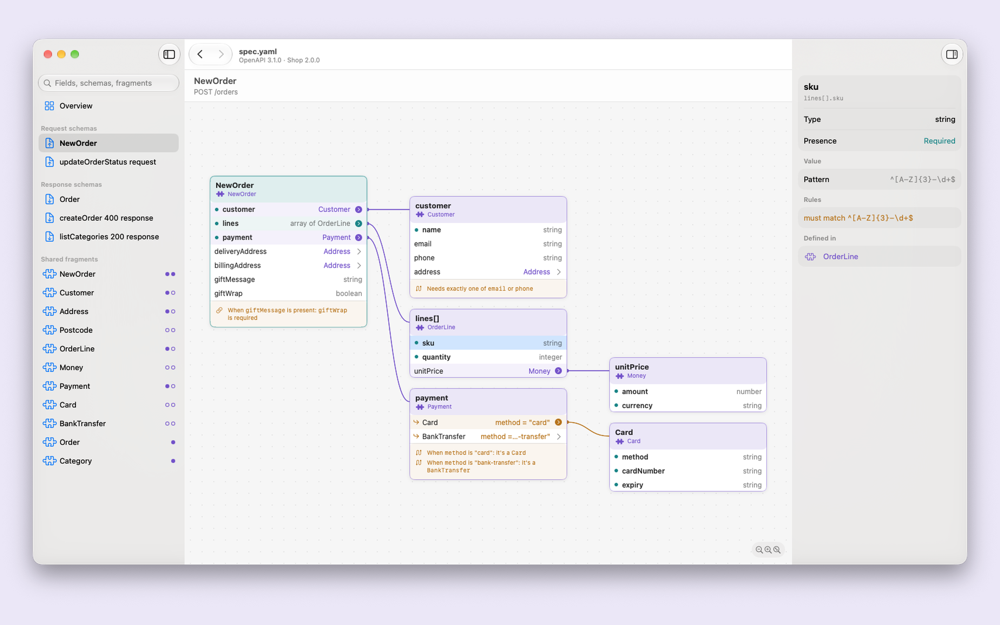
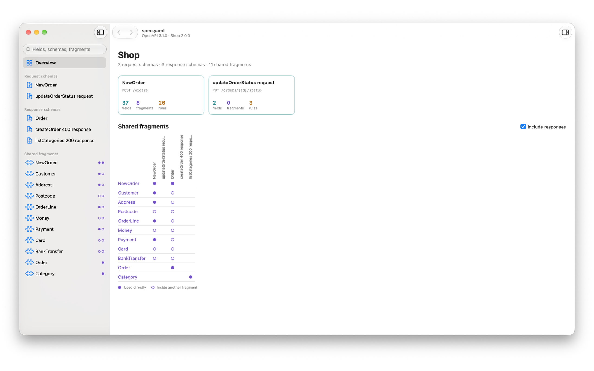
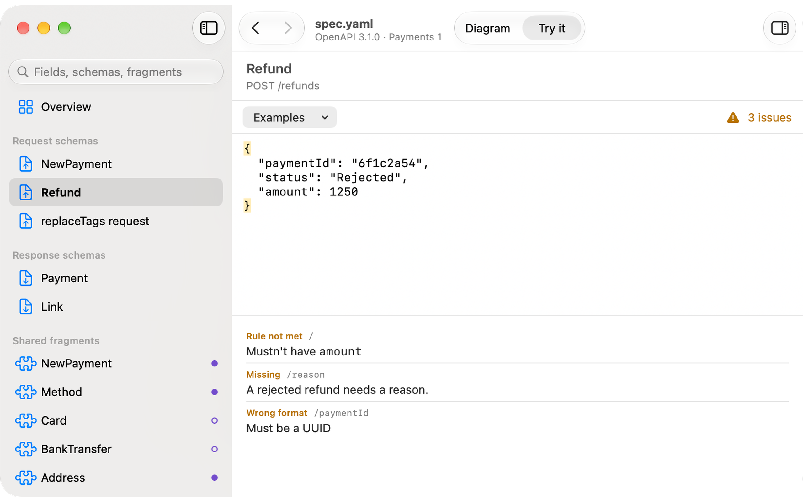

OpenAPI schema viewer for macOS.
Open an OpenAPI 3.0 or 3.1 file (JSON or YAML) and see every request and response body as an interactive block diagram. Paste a JSON payload to check it against a schema with plain-English error messages.
Requires macOS 15 Sequoia or later.
Every request and response body schema becomes a block diagram you can open up card by card. The inspector spells out each field's rules in plain English.

The overview has a card for each request and response schema, and a grid of the shared fragments (components/schemas) each one is built from.

Paste a JSON payload and Swanger checks it against the schema, explaining in plain English what's wrong.

Swanger shows schemas only. It has no endpoint list, parameters, servers or auth, and it never sends requests. It reads paths only to find which schemas are request and response bodies.
Swanger requires macOS 15 Sequoia or later. The sandbox limits what files Swanger can read: it supports specs where all definitions are in a single file. Specs that reference external files show a "not supported" message instead of the diagram.